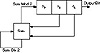

|


|
|
|||
| ||||
|
|
|
To access the contents, click the chapter and section titles.
Applied Cryptography, Second Edition: Protocols, Algorthms, and Source Code in C (cloth)
There are a few things to note here. First, the carry register is not a single bit; it is a number. The size of the carry register must be at least log2t, where t is the number of taps. There are only two taps in the previous example, so the carry register only has to be 1 bit wide. If there were four taps, the carry register would have to be 2 bits wide, and could be either 0, 1, 2, or 3. Second, there is an initial transient before the FCSR settles down into its repeating period. In the previous example, only one state never repeated. For larger and more complicated FCSRs, there may be more. Third, the maximum period of a FCSR is not 2n - 1, where n is the length of the shift register. The maximum period is q - 1, where q is the connection integer. This number gives the taps and is defined by:
(Yes, the qis are numbered from left to right.) And even worse, q has to be a prime for which 2 is a primitive root. The rest of this discussion assumes q is of this form. In this example, q = 2*0 + 4*1 + 8*1 - 1 = 11. And 11 is a prime with 2 as a primitive root. So the maximum period is 10. Not all initial states give you the maximum period. For example, look at the FCSR when the initial value is 101 and the carry register is set to 4. 
At this point the register spits out a neverending stream of 1s. Any initial state will result in one of four things. First, it is part of the maximum period. Second, it will fall into the maximum period after an initial transient. Third, it will fall into a sequence of all zeros after an initial transient. Fourth, it will fall into a sequence of all ones after an initial transient. There is a mathematical formula for determining what will happen to a given initial state, but it’s much easier to just test it. Run the FCSR for a while. (If m is the initial memory, and t is the number of taps, then log2(t) + log2(m) + 1 steps are enough.) If it degenerates into a neverending stream of 0s or 1s within n bits, where n is the length of the FCSR, don’t use it. If it doesn’t, then use it. Since the initial state of a FCSR corresponds to the key of the stream cipher, this means that a FCSR-based generator will have a set of weak keys. Table 17.1 lists all connection integers less than 10,000 for which 2 is a primitive root. These all have maximum period q - 1. To turn one of these numbers into a tap sequence, calculate the binary expansion of q + 1. For example, 9949 would translate to taps on bits 1, 2, 3, 4, 6, 7, 9, 10, and 13, because
Table 17.2 lists all the 4-tap tap sequences that result in a maximal-length FCSR for shift register lengths of 32 bits, 64 bits, and 128 bits. Each of the four values, a, b, c, and d, combine to generate q, a prime for which 2 is primitive.
Any of these tap sequences can be used to create a FCSR with period q - 1. The idea of using FCSRs for cryptography is still very new; it is being pioneered by Andy Klapper and Mark Goresky [844,845,654,843,846]. Just as the analysis of LFSRs is based on the addition of primitive polynomials mod 2, analysis of FCSRs is based on addition over something called the 2-adic numbers. The theory is well beyond the scope of this book, but there seems to be a 2-adic analog for everything. Just as you can define linear complexity, you can define 2-adic complexity. There is even a 2-adic analog to the Berlekamp-Massey algorithm. What this means is that the list of potential stream ciphers has just doubled—at least. Anything you can do with a LFSR you can do with a FCSR. There are further enhancements to this sort of idea, ones that involve multiple carry registers. The analysis of these sequence generators is based on addition over the ramified extensions of the 2-adic numbers [845,846]. 17.5 Stream Ciphers Using FCSRsThere aren’t any FCSR stream ciphers in the literature; the theory is still too new. In the interests of getting the ball rolling, I propose some here. I am taking two different tacks: I am proposing FCSR stream ciphers that are identical to previously proposed LFSR generators, and I am proposing stream ciphers that use both FCSRs and LFSRs. The security of the former can probably be analyzed using 2-adic numbers; the latter cannot be analyzed using algebraic techniques—they can probably only be analyzed indirectly. In any case, it is important to choose LFSRs and FCSRs whose periods are relatively prime. All this will come later. Right now I know of no implementation or analysis of any of these ideas. Wait some years and scan the literature before you trust any of them. Cascade Generators There are two ways to use FCSRs in a cascade generator:
FCSR Combining Generators These generators use a variable number of LFSRs and/or FCSRs, and a variety of functions to combine them. The XOR operation destroys the algebraic properties of FCSRs, so it makes sense to use it to combine them. The generator, shown in Figure 17.5, uses a variable number of FCSRs. Its output is the XOR of the outputs of the individual FCSRs. Other generators along similar lines are:
|
|
Products | Contact Us | About Us | Privacy | Ad Info | Home
Use of this site is subject to certain Terms & Conditions, Copyright © 1996-1999 EarthWeb Inc. All rights reserved. Reproduction whole or in part in any form or medium without express written permision of EarthWeb is prohibited.
|
){kind=link}
){kind=link}